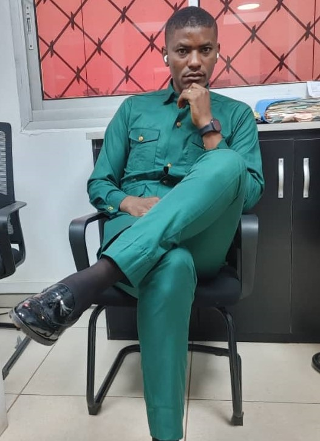

Experts en agriculture biologique au Cameroun depuis 2025
Fondé par Lionel NDZANA, ingénieur agronome, le cabinet Agriculture Biologique est né d'une conviction : une agriculture performante doit respecter les écosystèmes tout en étant économiquement viable. Depuis 2025, nous accompagnons les agriculteurs, porteurs de projet et coopératives vers la conversion bio et l'optimisation durable.
Notre équipe pluridisciplinaire maîtrise la production végétale, animale, la certification et le marketing des produits bio. Nous intervenons du conseil stratégique à la formation pratique sur le terrain.
Discuter sur WhatsApp
CEO & Fondateur
Ingénieur agronome | 10+ ans d'expérience
Conduite et Stratégie de l'Entreprise agricole